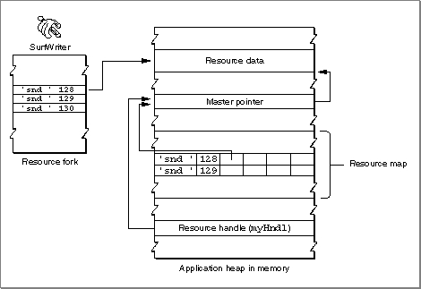
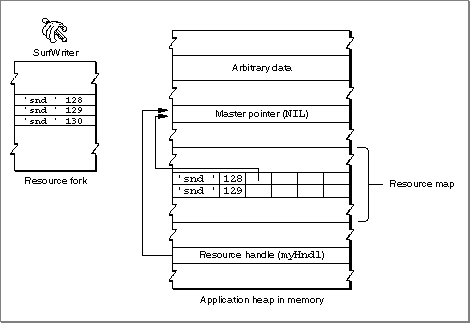

Legacy Document
Important: The information in this document is obsolete and should not be used for new development.
Important: The information in this document is obsolete and should not be used for new development.


Getting a Resource
You usually use theGetResourcefunction to read data from resources other than menus, windows, dialog boxes, and controls. You supply the resource type and resource ID of the desired resource, and theGetResourcefunction searches the resource maps of open resource forks (according to the search path described in "Search Path for Resources" beginning on page 1-8) for that resource's entry.If the
GetResourcefunction finds an entry for the requested resource in the resource map and the resource is in memory (that is, if the resource map in memory does not specify the resource's location with a handle whose value isNIL),GetResourcereturns a handle to the resource. If the resource is listed in the resource map but is not in memory (the resource map in memory specifies the resource's location with a handle whose value isNIL),GetResourcereads the resource data from disk into memory, replaces the entry for the resource's location with a handle to the resource, and returns to your application a handle to the resource. For a resource that cannot be purged (that is, whose purgeable attribute is not set) you can use the returned handle to refer to the resource in other Resource Manager routines. (Handles to purgeable resources are discussed later in this section.)For example, this code uses
GetResourceto get a handle to an'snd 'resource with resource ID 128.
VAR resourceType: ResType; resourceID: Integer; myHndl: Handle; resourceType := 'snd '; resourceID := 128; myHndl := GetResource(resourceType, resourceID);Figure 1-7 shows howGetResourcereturns a handle to a resource at your application's request.Figure 1-7 Getting a handle to a resource
 Note that the handle returned to your application is a copy of the handle in the resource map. The resource map contains a handle to the resource data, and the Resource Manager returns a handle to the same block of memory for use by your application. If you use
GetResourceto get a handle to a resource that has the purgeable attribute set or if you intend to modify such a resource, keep the following discussion in mind.If a resource is marked purgeable and the Memory Manager determines that it must purge a resource to make more room in your application's heap, it releases the memory occupied by the resource. In this case, the handle to the resource data is no longer valid, because the handle's master pointer is set to
NIL. If your application attempts to use the handle previously returned by the Resource Manager, the handle no longer refers to the resource. Figure 1-8 shows a handle to a resource that is no longer valid, because the Memory Manager has purged the resource. To avoid this situation, you should call theLoadResourceprocedure to make sure that the resource is in memory before attempting to refer to it.Figure 1-8 A handle to a purgeable resource after the resource has been purged
 If you need to make changes to a purgeable resource using routines that may cause the Memory Manager to purge the resource, you should make the resource temporarily not purgeable. You can use the Memory Manager procedures
HGetState,HNoPurge, andHSetStatefor this purpose. After callingHGetStateandHNoPurge, change the resource as necessary. To make the changes permanent, use theChangedResourceandWriteResourceprocedures; then callHSetStatewhen you're finished. Listing 1-2 illustrates the use of these routines.Listing 1-2 Safely changing a resource that is purgeable
VAR resourceType: ResType; resourceID: Integer; myHndl: Handle; state: SignedByte; resourceType := 'snd '; resourceID := 128; {read the resource into memory} myHndl := GetResource(resourceType, resourceID); state := HGetState(myHndl); {get the state of the handle} HNoPurge(myHndl); {mark the handle as not purgeable} {modify the resource as needed} {...} ChangedResource(myHndl); {mark the resource as changed} WriteResource(myHndl); {write the resource to disk} HSetState(myHndl, state); {restore the handle's state}Although you'll usually want to useWriteResourceto write a resource's data to disk immediately (as shown in Listing 1-2), you can instead use theSetResPurgeprocedure and specifyTRUEin theinstallparameter. If you do this, the Memory Manager calls the Resource Manager before purging data specified by a handle. The Resource Manager determines whether the passed handle is that of a resource in your application's heap, and, if so, callsWriteResourceto write the resource to disk if its changed attribute is set. You can call theSetResPurgeprocedure and specifyFALSEin theinstallparameter to restore the normal state, so that the Memory Manager purges resource data in memory without checking with the Resource Manager.